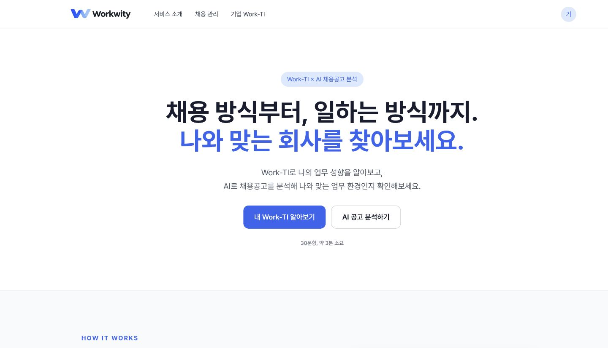

좋은 회사보다 먼저,
나와 맞는 일하는 방식.
30문항 업무 성향 테스트와 AI 공고 분석을 연결했습니다. 지원 전 나의 업무 성향과 공고에 드러난 업무 환경을 함께 살펴보는 개인 MVP입니다.
MY ROLE
서비스 기획
UX/UI · MVP 구현
디자인과 개발을 연결해,
아이디어를 사용할 수 있는 서비스로.
지금까지 만든 세 가지 작업을 소개합니다.

히라가나 · 가타카나
발음 규칙

DAY 학습 · 퀴즈
오답 복습

30문항 업무 성향 테스트와 AI 공고 분석을 연결했습니다. 지원 전 나의 업무 성향과 공고에 드러난 업무 환경을 함께 살펴보는 개인 MVP입니다.
서비스 기획
UX/UI · MVP 구현
기초 문자와 발음 규칙부터 단어 학습으로 이어집니다. 뜻과 읽기의 오답 복습을 나누어 제공하며, 사용자별 학습 기록을 구분합니다.
GOOGLE APPS SCRIPTDAY별 단어 학습과 퀴즈, 오답 복습을 연결합니다. 5일 단위 총평가의 진행 조건을 화면에 안내해 다음 학습 단계를 보여줍니다.
GOOGLE APPS SCRIPT